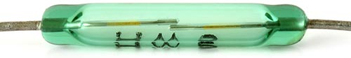
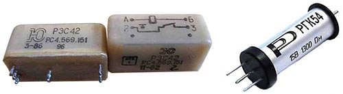
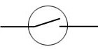
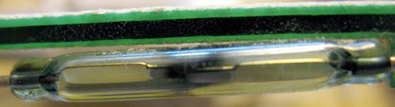
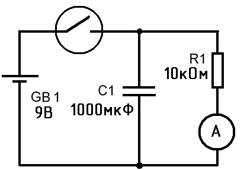

Геркон
Cлово геркон расшифровывается как: герметичный магнитоуправляемый контакт. Геркон представляет собой небольшую вытянутую колбу с откачанным воздухом, внутри которого содержится пара гибких металлических ферромагнитных контактов. Контакты по длине перекрываются, но находятся на небольшом расстоянии друг от друга, этих контактов может быть несколько, на разные включения (замыкание или размыкание). При поднесении магнита к геркону контакты замыкаются (или размыкаются).

Рис. 1 - Внешний вид геркона
Герконы могут использоваться в датчиках (например датчик скорости на велосипеде), выключателях и пр… Раньше герконы использовались в реле, поверх геркона наматывалась катушка в несколько сотен витков (сопротивление обмотки может достигать 500-1500 Ом) и при подаче напряжения контакты геркона замыкались, сейчас реле с герконами редко где используются.

Рис. 2 - Герконовое реле
Достоинства герконовых реле:
- Полная герметизация контакта позволяет их использовать герконовые реле в различных условиях влажности, запыленности и т. д.
- Высокое быстродействие, что позволяет использовать герконовые реле при высокой частоте коммутаций.
- Гальваническая развязка коммутируемых цепей и цепей управления герконовых реле.
- Расширенные функциональные области применения герконовых реле.
- Надежная работа в широком диапазоне температур
Недостатки герконовых реле:
- Восприимчивость к внешним магнитным полям, что требует специальных мер по защите от внешних воздействий.
- Хрупкий корпус герконов, чувствительный к ударам.
- Малая мощность коммутируемых цепей у герконов.
- Возможность самопроизвольного размыкания контактов герконовых реле при больших токах.
Герконы на схемах обозначаются следующим образом:

Рис. 3 - Обозначение геркона на схемах
Особенности и преимущества герконов:
- Контакты геркона находятся в вакууме или в инертном газе и как следствие при работе они слабо обгорают, даже если при замыкании или размыкании между контактами возникает искра.
- Герконы достаточно долговечные, если не бить геркон и не пропускать очень большие токи, то срок службы геркона бесконечен.
- Герконы в работе почти бесшумны, слышно только цоканье контактов.
- Относительно высокое быстродействие.
Недостатки герконов:
- Герконы очень хрупкие, корпус герконов как правило изготовлен из хрупкого стекла, следовательно их нельзя использовать в условиях сильных вибраций и ударов.
- Для их срабатывания нужно создать или приложить магнитное поле.
- Иногда контакты герконов залипают, такое происходит после прохождения больших токов и проскакивания искры при срабатывании контактов, такой геркон необходимо заменить, герконы в основном служат для коммутации небольших токов.

Рис. 4 - Геркон с обгоревшими контактами
Применение герконов
Как уже говорилось, чаще всего герконы применяются в системах охранной сигнализации, ставят их на дверь, окна… при открывании двери мимо геркона проходит магнит (который расположен на двери) и замыкает геркон. Можно сделать включение какого либо устройства при поднесении магнита к геркону, например включение компьютера, или сделать так чтобы двигатель скутера заводился только после того как поднесут к датчику магнит, ставить в качестве датчиков контроля положения, сделать так чтобы при поднятии какого либо предмета сработала сирена, или прикрепить геркон на колесо велосипеда для контроля скорости.

Рис. 5 - Схема подключения геркона для контроля скорости велосипеда
Батарейку можно использовать и на 1,5 В, все зависит от типа прибора индикатора, который вы будете использовать, номинал резистора R1 подбирается экспериментально так, чтобы при максимальной скорости стрелка прибора была почти на максимуме. Конденсатор С1 задает время спада стрелки прибора. Геркон крепится на вилке велосипеда, а магнит на спицу колеса. Расстояние от геркона до магнита должно быть минимальным. При вращении колеса магнит периодически будет проходить мимо геркона и замыкать его контакты.